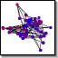

|  |
Student CliquesTutorial 13 of WCSS Tutorial Series |
A fictional model of student clique formation on playgrounds. Students form a social network of varying degrees of mutual friendship or dislike. Once let out of school, students try to move towards friends and away from enemies . Additional forces tug on students to keep them near near the schoolhouse (the center of the yard), and to add som e randomness. Students change from red to blue as they become happier with their situation.